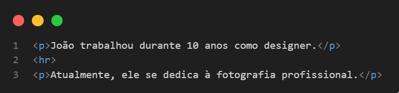
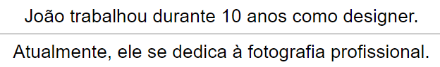
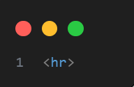

Tag <hr> — Linha horizontal no HTML5
A tag <hr> no HTML5 é usada para representar uma quebra temática entre elementos de conteúdo. Tradicionalmente, ela é exibida como uma linha horizontal na página, e seu nome vem de "horizontal rule" (regra horizontal).
Finalidade
No HTML5, a tag <hr> não é apenas decorativa, como era em versões anteriores do HTML. Agora ela é considerada semântica — usada para indicar uma mudança de tópico ou seção dentro do conteúdo.
Exemplo de uso semântico: 
Resultado do exemplo
Sintaxe
A tag <hr> é uma tag vazia, ou seja, não possui conteúdo interno e não precisa de uma tag de fechamento.

Acessibilidade
Por ser semântica, a <hr> pode ajudar tecnologias assistivas (como leitores de tela) a entender a estrutura do conteúdorretamente para marcar transições de ideias.
Boas práticas
- Use
<hr>para divisões lógicas no conteúdo, não apenas para decorar. - Evite usar
<hr>apenas para estética — nesse caso, prefira usar CSS com div ou pseudo-elementos.
Resumo rápido
| Característica | Valor |
|---|---|
| É semântica? | Sim (no HTML5) |
| Precisa de fechamento? | Não |
| Pode ser estilizada? | Sim, via CSS |
| Usos comuns | Separar tópicos ou seções |
| Acessível? | Com uso correto |